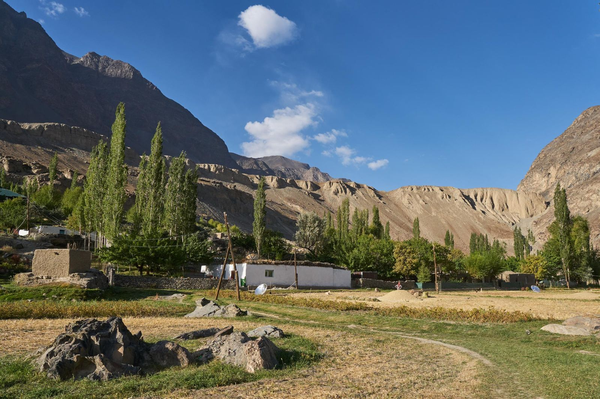
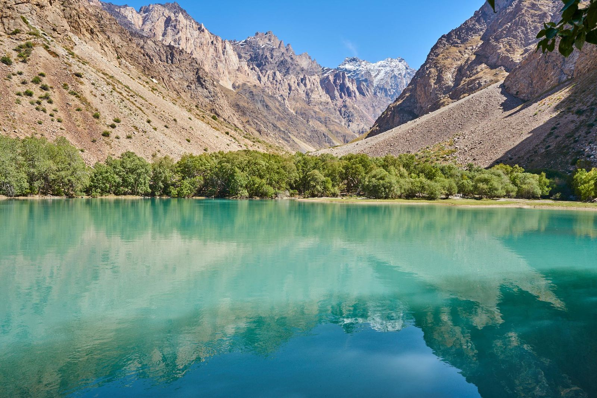
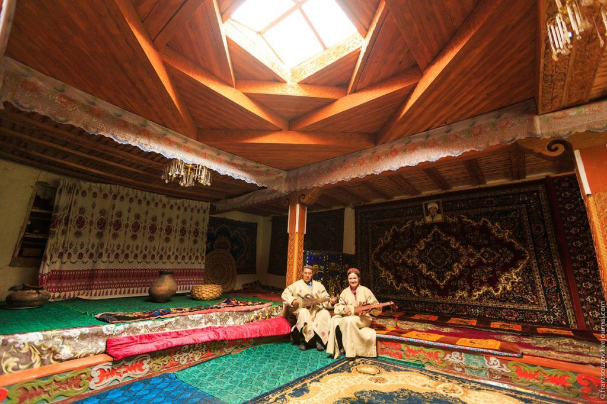
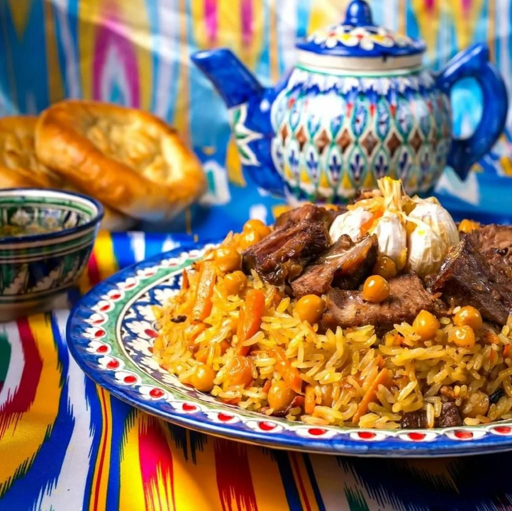
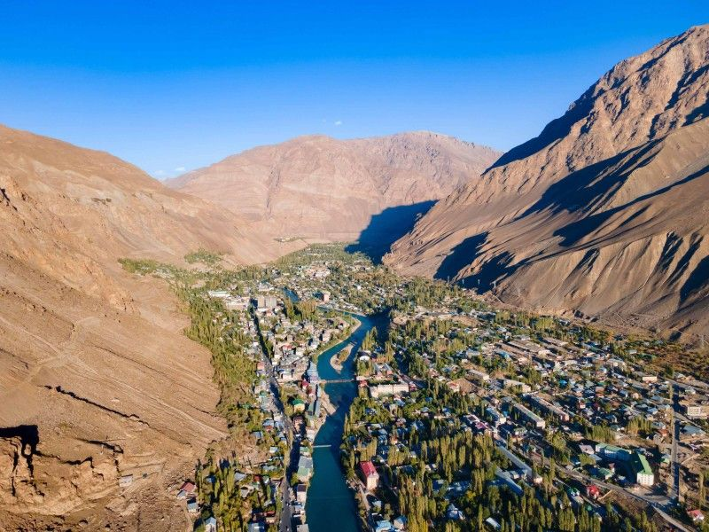
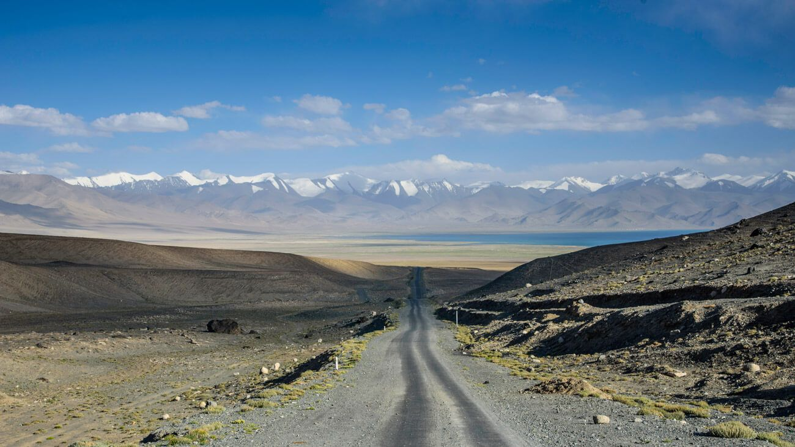

Чӣ гуна зеҳни сунъиро (AI) оғоз кардан мумкин аст
Қадами 1 — Muse бо почтаи электронӣ танҳо
Ба muse.ai равед, бо Gmail-и худ ворид шавед ё сабти ном шавед. Барномаро боргирӣ кардан лозим нест — Muse-ро тавассути веб ва почтаи электронӣ истифода баред. Шумо метавонед бо овоз ё бо матн, ба тоҷикӣ ё ба англисӣ, гап занед ва савол диҳед.
Қадами 2 — Cloudflare барои сохтани саҳифаҳои веб
Ба cloudflare.com равед, бо Gmail-и худ ворид шавед ва ҳисоби ройгон созед. Пас токенро (API token) созед ва онро ба Muse тавассути роҳи бехатар диҳед. Токен барои сохтани токенҳои иловагӣ низ лозим аст. Вақте Muse он токенро дорад, он метавонад саҳифаҳоро созад ва нашр кунад, ва ҳама чизи лозимиро иҷро кунад — масалан, ҳамин саҳифаи вебро.
Қадами 3 — Дигар асбобҳои ройгони AI ва омӯзиш
Аз Muse хоҳиш кунед, ки барои ҳар чизе ки омӯхтан мехоҳед, дарси қадам ба қадам бо забони тоҷикӣ созад: сохтани вебсайт, забони англисӣ, маркетинг барои меҳмонхона, аксбардорӣ ва бисёр чизҳои дигар. Мисолҳои дархост (prompt) ба тоҷикӣ:
AI дар чӣ чизҳои дигар кӯмак карда метавонад — мисолҳо
Зеҳни сунъӣ, пеш аз ҳама Muse, танҳо барои вебсайт нест. Он дар бисёр корҳои ҳаррӯза ва муҳим кӯмак карда метавонад:
Қонуни виза дар Полша
Muse метавонад намудҳои виза ва иҷозати иқоматро дар Полша фаҳмонад: кадом ҳуҷҷатҳо лозиманд, мӯҳлатҳо чӣ гунаанд ва қадамҳо аз куҷо оғоз мешаванд. Қайд: ин маълумоти умумӣ аст, маслиҳати ҳуқуқии расмӣ нест. Барои қарори ниҳоӣ ба манбаи расмӣ ё ба ҳуқуқшинос муроҷиат кунед.
Банақшагирии парвоз ва сафар
Muse метавонад парвозҳоро ҷустуҷӯ кунад, нархҳо ва истгоҳҳоро муқоиса кунад ва масири пурраи сафар созад — масалан, аз Варшава ба Душанбе ё ба Хоруғ.
Корҳои ҳаррӯза дар Варшава
- Ёфтани хизматрасонӣ ва мағозаҳо дар наздикӣ
- Нақлиёти ҷамъиятӣ: кадом автобус ё трамвай, аз куҷо ва кай
- Тарҷума: лаҳистонӣ — тоҷикӣ — англисӣ
- Навиштани мактубҳо ва паёмҳои расмӣ
- Ёдоварӣ ва тақвим, рӯйхати харид
- Фаҳмонидани ҳуҷҷатҳои маҳаллӣ бо забони оддӣ
Барои меҳмонхонаи шумо
- Ҷавоб додан ба меҳмонон, ба забонҳои гуногун
- Таблиғ ва пайдо кардани меҳмонони нав
- Сохтани саҳифаи веб, мисли ҳамин саҳифа
- Дарсҳо барои ҳар мавзуъе ки ба шумо лозим аст
Пайванди дигар — пешниҳоди Раҳул
Раҳул як имкони дигарро низ пешниҳод кард: instinct.com — ба гуфтаи ӯ, ин як имкони ройгон аст ва онро дар ҳама ҷо истифода бурдан мумкин аст. Онро низ санҷед ва бо Muse муқоиса кунед.
Ман Алмуска ҳастам — ёрдамчии шахсии шумо
Салом! Ман Алмуска ҳастам, ёрдамчии шахсии шумо аз Muse, ки аз тарафи Meta сохта шудааст. Muse як ёрдамчии зеҳни сунъӣ аст: шумо бо овоз ё матн гап мезанед, ман гӯш мекунам, мефаҳмам, ки шумо чӣ мехоҳед, ва кӯмак мекунам.
Ман метавонам ҷустуҷӯ кунам, нақша созам, ёдоварӣ гузорам, паём фиристам, тақвимро идора кунам, матн нависам ва дар корҳои ҳаррӯза кӯмак кунам. Ман дар хотир нигоҳ медорам, ки чӣ барои шумо муҳим аст.
Muse is Meta's personal AI agent. You speak or type, it listens, understands, searches, plans, remembers what matters to you, and helps with everyday work.
Меҳмонхонаи фарзӣ дар Рушон
Дар намоиш мо як меҳмонхонаи фарзӣ — сохта, барои мисол — тасаввур кардем:
- Шаҳр: Рушон (Rushon / Rushan) — дар маҳал онро Вомар (Vamar) низ меноманд
- Минтақа: кӯҳҳои Помир, Вилояти Мухтори Кӯҳистони Бадахшон (ВМКБ), Тоҷикистон, дар соҳили дарёи Панҷ, дар сарҳад бо Афғонистон
- Ҷой: маҳалли Дерзуд (Derzud) — ба поён нигаред
No source confirms a “Derju/Derzhu Street”. The documented name is the DERZUD locality in Rushon District — verify the spelling locally before signage.
This is a hypothetical demo hostel, not a real booking listing. It was used to show how Muse can guide guests and help plan a small hospitality business.
Хуш омадед ба меҳмонхонаи мо дар Рушон
Хуш омадед ба меҳмонхонаи мо дар Рушон, дар дили кӯҳҳои Помир. Дар наздикӣ бозори Рушон ҳаст. Шумо метавонед дар соҳили дарёи Панҷ сайр кунед ва деҳаҳои Афғонистонро дар он соҳили дарё бубинед, ба водии Бартанг равед, ва меҳмоннавозии мардуми маҳаллиро бичашед. Истироҳат кунед, мо дар хизмати шумо ҳастем.
Welcome to our hostel in Rushon, in the heart of the Pamir Mountains — the Rushon bazaar nearby, a walk by the Panj River with Afghan villages across the water, the Bartang Valley gateway, and Pamiri hospitality.



Хӯроки анъанавӣ ва мусиқӣ — маълумоти тадқиқотӣ
Хӯрок: хӯроки хонагӣ дар меҳмонхона — меъёри асосӣ
Дар Помир меъёри асосӣ ин аст: меҳмон дар ҷое ки хоб мекунад, хӯрок низ мехӯрад — нарх одатан хӯроки шом ва наҳориро дар бар мегирад (half-board). Хӯрокҳои маъмул: нон, ширчой, оши палав, қурутоб, шӯрбо, манту, ва зардолу ва тути хушк. Дар тадқиқот ягон тарабхона ё чойхонаи номдор дар Рушон бо соатҳои корӣ ҳуҷҷат нашудааст — соатҳоро дар ҷой санҷед.
Food norm in the Pamirs: homestay half-board — non, shirchoy, osh/plov, qurutob, shurbo, mantu, dried apricots and mulberries. No named restaurant or chaikhana with documented hours was found in Rushon.

Мусиқӣ ва рақс: барномаи доимии оммавӣ вуҷуд надорад
Дар тадқиқот ягон барномаи доимии оммавии мусиқӣ ё рақс дар Рушон ҳуҷҷат нашудааст — на рӯз, на соат, на ҷой, на чипта. Дар намоиши аввал ҷадвалҳое мисол оварда шуданд (масалан, «Хонаи фарҳанг, ҷумъа ва шанбе, соати 19:00» ва «мусиқӣ дар бозор рӯзи якшанбе») — онҳо мисолҳои сохта буданд, на факт, ва дар ин ҷо нест карда шуданд.
Мусиқии ҳақиқии маҳаллӣ чунин аст: маддоҳ ва қасида, фалак, ва рақси Рапо — дар хонаҳо, дар ҷамъомадҳои хонаводагӣ, дар тӯйҳо, дар ҷамъомадҳои рӯзи панҷшанбе ва дар маросимҳои дигар. Ба меҳмонон танҳо инро пешниҳод кардан мумкин аст: бо дархост, агар навозандагони маҳаллӣ розӣ шаванд, мусиқии хусусии хонагӣ бо пардохти одилона — ҳар дафъа алоҳида, ҳеҷ гоҳ кафолат дода намешавад. Мусиқии динӣ ва маросимиро ҳамчун «фароғат» нафурӯшед.
No regular public traditional dance/music performance or schedule in Rushon is documented. Music is maddoh/qasida, falak and the Rapo dance at home gatherings, weddings, Thursday gatherings and funerals. Offer only request-based, fairly paid private house music — never guaranteed.
Чашмаҳои гарм: дар наздикии Рушон нестанд
Дар Рушон ва дар наздикии он чашмаи гарм нест. Гармчашмаи машҳур (Garm Chashma) тақрибан 107 км дур аст, дар ҷануби Хоруғ. Онро ҳамчун «дар наздикӣ» номбар накунед.
No hot springs in or near Rushon. Garm Chashma is about 107 km away, south of Khorog.
Рушон — натиҷаҳои тадқиқоти амиқ
Findings from the finished deep-research pass on Rushon (10 Nov 2026). Main text in Tajik; sources are travel/research guides — verify prices, permits and road conditions again before travelling.
Рушон чист: шаҳри транзитӣ ва дарвозаи Бартанг
Рушон шаҳри ниҳоӣ нест — он шаҳри транзитӣ ва нуқтаи оғози Бартанг аст. Он 65 км дар шимоли Хоруғ, дар баландии 2,000 метр, дар соҳили дарёи Панҷ ҷойгир аст; аҳолии шаҳр 6,577 нафар (соли 2015) буд ва дар маҳал онро Вомар меноманд. Аксари сайёҳон дар Рушон танҳо 1 шаб мемонанд. Меҳмонхона шаби дуюмро он вақт мегирад, ки хизматҳои Ҷизев, Бартанг ва рӯзи истироҳатро осон кунад: наҳории барвақт, хӯроки нисфирӯзӣ бо худ, таксӣ то пули Ҷизев, нигоҳдории бағоҷ ва велосипед, ҷомашӯӣ ва души гарм.
Rushon is a transit + Bartang-launchpad town, not a destination: 65 km north of Khorog, 2,000 m, town population 6,577 (2015), on the Panj, locally Vamar. Most travellers stay 1 night; a hostel wins a 2nd night with Jizev / Bartang / rest-day services.

Ҷизев, Басид ва водии Бартанг
- Ҷизев (Jizev): оғози роҳи пиёдагардӣ 23–25 км аз Рушон, баъд 2–3 соат пиёда боло, тақрибан 500 метр баландӣ.
- Басид (Basid): тақрибан 85 км аз Рушон.
- Роҳи Бартанг: тақрибан 300 км то Қаракӯл, аз назди тақрибан 25 деҳа мегузарад.
- Роҳи калони Помир, M41: Душанбе — Рушон як рӯзи пурра ва душвор дар роҳ аст.
Мавсим
Беҳтарин мавсим: аз нимаи июн то сентябр; авҷи он: июл ва август. Дар зимистон, аз ноябр то март, аксари меҳмонхонаҳои хонагӣ баста мешаванд.
Best season mid-June to September, peak July–August; in winter (Nov–Mar) most homestays shut.
Сайёҳон кистанд — ва омор чӣ мегӯяд
Барои ВМКБ ё Рушон ягон шумораи расмии сайёҳон дар манбаъҳо вуҷуд надорад. Охирин баҳодиҳии Помир тақрибан 4,000 сайёҳ дар соли 2017 буд — он кӯҳна аст. Сайёҳон асосан инҳоанд: сафарҳои 4×4, сайёҳони заминӣ (overlanders), велосипедронҳо, мотоциклронҳо ва кӯҳнавардон. Рақами 1,388,800 сайёҳи хориҷӣ барои тамоми Тоҷикистон (январ–сентябри 2025) сайёҳии Помир нест — онро ҳамчун сайёҳии Рушон нишон надиҳед.
No GBAO/Rushon visitor count exists in sources; the last Pamir estimate is ~4,000 in 2017 (dated). Travellers are 4x4 tours, overlanders, cyclists, motorcyclists and trekkers. The national 1,388,800 figure for Jan–Sep 2025 is NOT Pamir traffic.
Иҷозатномаҳо ва сабти ном
- Иҷозатномаи ВМКБ ҳатмист. Бо раводиди электронӣ (e-visa) дар evisa.tj: раводид $30 + иҷозатномаи ВМКБ $20.
- Бисёр кишварҳо 30 рӯз бе раводид медароянд, аммо он гоҳ иҷозатномаи ВМКБ-ро тавассути сафорат, ОВИР ё ширкати сайёҳӣ гирифтан лозим аст: тақрибан $35–45. Британияи Кабир раводид лозим дорад.
- Сабти ном: агар будубош аз 10 рӯзи корӣ зиёд шавад, сабти ном дар ОВИР лозим аст. Тибқи маълумоти FCDO (2026), меҳмонхонаҳо дигар ин корро барои меҳмонон намекунанд — ба меҳмонон мактубҳои дорои сана ва маслиҳати равшан диҳед.
GBAO permit is mandatory: e-visa at evisa.tj $30 + $20 for GBAO; visa-free visitors get GBAO via embassy / OVIR / tour operator for about $35–45; the UK needs a visa. Registration after 10 business days at OVIR; hotels reportedly no longer do it for guests (2026 FCDO).
Нархҳо
Меъёри умумии ВМКБ (на нархи Рушон): тақрибан $15–30, ё 200–250 сомонӣ, барои як нафар дар як шаб, бо хӯроки шом ва наҳорӣ. Манбаъҳо бо ҳам розӣ нестанд — инро ҳамчун доираи тақрибӣ нишон диҳед, на нархи аниқ.
GBAO-wide norm (not a Rushon quote): about $15–30 / 200–250 somoni per person per night including dinner and breakfast — sources disagree, so present it as a range.
Рақобат дар Рушон — ҷойҳои ҳуҷҷатшуда
- Rushon Inn Guesthouse
- Muborak Hostel
- Hostel Bidzad (Дерзуд)
- PAMIR (кӯчаи Ленин)
Documented competition (not live-verified): Rushon Inn Guesthouse, Muborak Hostel, Hostel Bidzad (Derzud), PAMIR (Lenin St).
Зерсохтор — чизҳое ки ба нақша гирифтан лозим аст
- Алоқа: Tcell дар кӯҳҳо беҳтарин аст; дар Бартанг сигнал гум мешавад.
- Пули нақд: пеш аз рафтан ба Бартанг пули нақд гиред.
- Таъминот: молҳо асосан аз Хоруғ ё Душанбе меоянд.
- Барқ: Pamir Energy барқ медиҳад, аммо дар зимистон қатъшавӣ мешавад — чароғ ва гармии эҳтиётӣ ба нақша гиред.
Infrastructure: Tcell is best in the mountains and signal drops in the Bartang; take cash before the Bartang; supplies come from Khorog/Dushanbe; Pamir Energy electricity has winter outages — plan backup.

Ҳозир оғоз кунед — бе бино, бе замин
Барои оғоз кардан дар меҳмондорӣ, интизор шудан лозим нест, то замин, бино ё иҷозатномаи сохтмон пайдо шавад. Шумо метавонед ҳозир, аз Полша, оғоз кунед: ба меҳмонхонаҳои мавҷуда занг занед, нависед ва барои онҳо «пешхонаи» рақамӣ шавед — он қисме, ки бо меҳмонон ва меҳмонони оянда гап мезанад. Зеҳни сунъӣ корро тез мекунад, аммо шумо сарвари инсонӣ мемонед.
Ғояи 1 — «Пешхонаи AI» ҳамчун хизмат барои меҳмонхонаҳои мавҷуда
Ба меҳмонхонаҳои Рушон, Хоруғ ва Бартанг пешниҳод кунед — масалан, Rushon Inn, Muborak, Bidzad. Ба онҳо муроҷиат кунед; ҳоло бо онҳо ҳеҷ шарикӣ нест — ин пешниҳоди шумост, на созиши тайёр.
Хизмати шумо чӣ мешавад:
- Ҷавобҳо дар WhatsApp ва дар вебсайт, ба англисӣ, русӣ ва тоҷикӣ
- Паёмҳои хуш омадед пеш аз омадани меҳмон
- Саволҳои маъмул (FAQ): нарх, хӯрок, ҳаммом, роҳ
- Маълумот дар бораи Ҷизев ва Бартанг: масофа, таксӣ, хӯрок бо худ
- Ёдоварӣ дар бораи иҷозатномаи ВМКБ ва ҳуҷҷатҳо
- Тафсилоти воридшавӣ (check-in), ҳамоҳангии хӯрок ва ронанда
- Пас аз рафтан (check-out): сипос ва дархости шарҳ (review) аз меҳмон
Модели пул: маблағи хурд барои оғоз (setup) + маблағи моҳона барои ҳар як ҷой, ё маблағи хурд барои ҳар як фармоиши тасдиқшуда. Қоидаи шумо: AI матнро омода мекунад, аммо паёмҳои муҳимро шумо тасдиқ мекунед — AI танҳо фиристода намешавад.
Ғояи 2 — «Pamir Stays» — маркази таблиғи меҳмонхонаҳои Помир
Як вебсайти таблиғӣ созед, ки дар он бисёр меҳмонхонаҳо ва хонаҳои меҳмонии мавҷуда ҷойгир мешаванд: аксҳои ҳақиқӣ, тавсифи ростқавлона, нархҳо ва тамос. Дар саҳифа шакли дархост ё тугмаи WhatsApp бошад, ки ба соҳиб меравад — ё ба шумо, ва шумо онро ба соҳиб мефиристед.
Оғоз аз Полша: ҳамин ҳафта сайт созед, ба 10 ҷой занг занед ё нависед, ҷойгиркунии аввал ва озмоиширо (pilot) ройгон пешниҳод кунед. Баъдтар: барои ҷойгиркунии махсус (featured) ё барои ҳар як фармоиш пул гиред.
Ғояи 3 — Хизмати омодасозӣ барои соҳибони дигар
Ин хизмати якдафъаина аст: барои соҳиби дигар шумо Muse-ро (танҳо бо почтаи электронӣ), саҳифаи Cloudflare, ҷойгиркунӣ дар Google бо аксҳо, қолибҳои хуш омадед ва шаклҳои фармоишро омода мекунед. Барои онҳо шумо инчунин дарси тоҷикӣ (tutorial) месозад, то онҳо худашон истифода баранд.
Ин маҳорати нави шумост ва онро ҳозир фурӯхтан мумкин аст — на танҳо ба меҳмонхонаҳо, балки ба корхонаҳои дигар низ, дар Варшава ва дар Тоҷикистон.
Ғояи 4 — Бастаҳои хуш омадед барои ронандагон ва сафарҳо
Барои ронандагони Роҳи Помир ва ширкатҳои хурди сайёҳӣ: бастаҳои хуш омадед пеш аз сафар — матн ва аудио ба тоҷикӣ, англисӣ ва русӣ, масири сафар, ва кӯмаки тарҷума дар роҳ. Нарх: барои ҳар як сафар, ё моҳона барои ронандагон.
Нақшаи оғоз барои 7 рӯз
- Рӯзи 1: ном интихоб кунед ва саҳифаи намоишӣ созед — бо ЯК ҷойи намунавӣ (фарзӣ, мисли ҳамин саҳифа).
- Рӯзҳои 2–3: ба 10 меҳмонхона дар Рушон ва Хоруғ занг занед ё нависед ва озмоиши ройгон пешниҳод кунед.
- Рӯзи 4: ҷойи аввалини озмоиширо қабул кунед — бо аксҳо ва нархҳои ҳақиқии он.
- Рӯзи 5: барои он қолибҳои хуш омадед ва саволҳои маъмулро омода кунед.
- Рӯзҳои 6–7: ба дархостҳои аввалини ҳақиқии меҳмонон ҷавоб диҳед, аз соҳиб шарҳи хуб (testimonial) гиред — ва баъд барои хизмат пул гирифтанро оғоз кунед.
Шумо бино надоред — аммо шумо забонҳо, вақт ва асбобҳои нав доред. Аз ҳамин оғоз кунед. Муваффақият!
Чӣ гуна меҳмонхона сохтан мумкин аст — қадамҳои асосӣ
- Ғояро муайян кунед — меҳмонхона барои кӣ аст: сайёҳони транзитӣ, сайёҳони Бартанг, велосипедронҳо?
- Ҷой ва заминро пайдо кунед — дар Рушон, назди роҳи M41, бозор ва дарё; номи маҳалро (Дерзуд) дар ҷой санҷед.
- Иҷозатномаҳо гиред — ҳуҷҷатҳои замин, сохтмон ва фаъолияти меҳмонхонаро расмӣ кунед; дар бораи иҷозатномаи ВМКБ ва сабти меҳмонон маълумоти дақиқ омода кунед.
- Таъмир ва омода кунед — ҳуҷраҳо, ҳаммом, ошхона, гармӣ ва барқи эҳтиётӣ барои зимистон.
- Хизматҳои шаби дуюмро созед — наҳории барвақт, хӯрок бо худ, таксӣ ба Ҷизев, ҷомашӯӣ, нигоҳдории бағоҷ.
- Фарҳанги маҳаллиро бо эҳтиром илова кунед — хӯроки хонагӣ; мусиқии хонагӣ танҳо бо дархост ва бо розигии навозандагон.
- Таблиғ кунед — дар интернет, дар харитаҳо, бо аксҳои ҳақиқӣ ва маълумоти дақиқ; мавсим кӯтоҳ аст: нимаи июн то сентябр.
- Бо роҳбаладон ва ронандагон кор кунед — онҳо меҳмононро меоранд.
In short: define the concept for transit/Bartang travellers, find land in Rushon, get permits, renovate with winter backup, build the second-night services, market online honestly, and work with guides and drivers.
Чӣ гуна Muse-ро оғоз кардан мумкин аст
Оғоз оддӣ аст — танҳо почтаи электронӣ лозим аст:
- Ба muse.ai равед.
- Бо почтаи электронии худ сабти ном кунед ё ворид шавед.
- Баъд шумо метавонед Muse-ро дар веб истифода баред, ё барномаро зеркашӣ кунед: iPhone — App Store, Android — Google Play, Mac — ai.meta.com/muse/download.
Дастури пурраи қадам ба қадам дар болои ҳамин саҳифа аст.
Start at muse.ai and sign up / sign in with just an email. Then use Muse on the web, or download the apps: iOS on the App Store, Android on Google Play, Mac at ai.meta.com/muse/download. The full step-by-step guide is at the top of this page, in Tajik.
muse.ai — Оғоз кунед / StartБо Раҳул дар WhatsApp тамос гиред
Савол доред? Ба Раҳул нависед:
+1 424 234 1750
WhatsApp — нависед / Message on WhatsAppQuestions? Message Rahul on WhatsApp: +1 424 234 1750